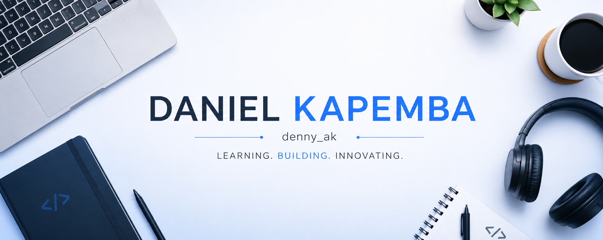
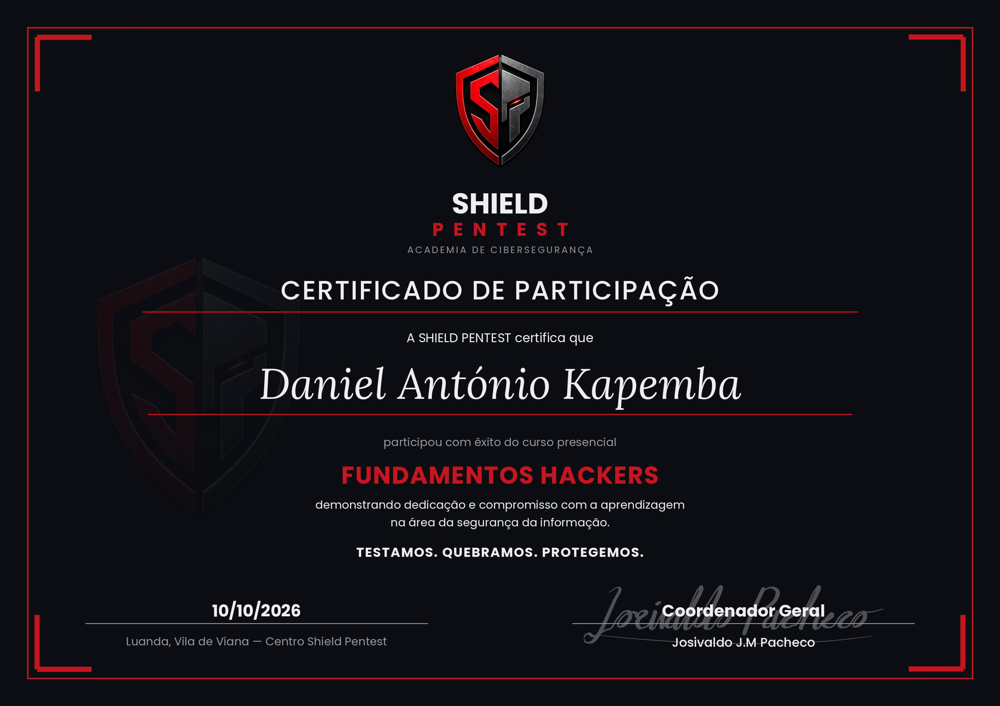
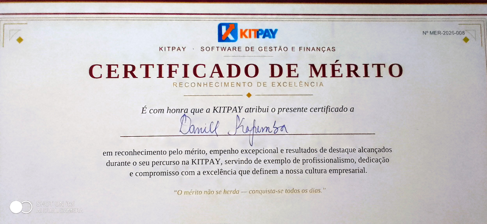

# 👋 Hi, I'm Daniel António Kapemba
Conhecido por Denny AK
### Backend & Database Developer in evolution · Cybersecurity Enthusiast

**Learning. Building. Innovating.**
\
|
### 💻 Backend
* PHP
* Laravel
* JavaScript
* C#
|
### 🗄️ Databases
* SQL
* MySQL
* Database Design
* Data Modeling
* Database Security
|
|
### 🐧 Operating Systems
* Ubuntu
* Kali Linux
* Windows
|
### 🛡️ Cybersecurity
* Security Fundamentals
* Ethical Hacking
* Secure Development
* Pentest
|
---
# Certifications

Uma certificação que demonstra o meu compromisso em aprender e evoluir na área de segurança cibernética.

Certificação de mérito em estágio, demonstrando o meu avanço e crescimento constante em desenvolvimento, lógica de programaçao e resolução de problemas reais.
---
# 🛠️ Tech Stack
### Languages


### Databases


### Systems & Tools


---
# 🚀 Featured Projects
### 🔐 DocSign
**Digital Signature & Document Management System**
A project focused on secure document management, authentication, access control and digital signatures.
**Focus:**
`PHP` `MySQL` `Security` `Authentication` `RBAC` `Cryptography`
> Repositório Disponível Em Breve
---
### 🤖 Denny-ChatBot
A chatbot developed during an internship that processes user questions, searches for matching answers stored in a `.JSON` file and, when necessary, retrieves information from the Web.
**Focus:**
`JavaScript` `JSON` `Web` `Logic`
> Repositório Disponível Em Breve
---
### 💼 Portfolio
My personal portfolio showcasing my projects, technical journey and professional development.
> Repositório Disponível Em Breve
---
# 🧠 How I Learn
I don't want to learn technology only by memorizing commands.
My learning cycle is:
```text
LEARN
↓
BUILD
↓
BREAK IT
↓
UNDERSTAND
↓
SECURE
↓
IMPROVE
↓
REPEAT
```
Every project is an opportunity to understand something deeper.
---
# 🧭 My Roadmap
### 01 — Backend & Databases
`Backend Development` → `SQL` → `Database Engineering` → `APIs`
⬇️
### 02 — Systems & Networking
`Linux` → `Operating Systems` → `Networking`
⬇️
### 03 — Cybersecurity
`Security Fundamentals` → `Web Security` → `Ethical Hacking` → `Security Engineering`
⬇️
---
# 📚 Currently Learning
```text
Backend Development
SQL & Database Engineering
Linux
Networking
Ethical Hacking
Cybersecurity
```
### 🎯 Next Milestones
* [ ] Strengthen Backend Development
* [ ] Deepen SQL & Database Engineering
* [ ] Complete Networking foundations
* [ ] Prepare for data center & cloud security
* [ ] Strengthen Linux & Systems
* [ ] Continue Ethical Hacking
* [ ] Build security-focused projects
---
---
# 🔥 Contribution Streak
---
# 📈 Contribution Activity
---
# 🌍 Beyond Code
I'm also working on:
* 🇬🇧 Improving my English
* 🧠 Developing problem-solving skills
* 📚 Studying technology consistently
* 🌐 Building a professional network
* 🚀 Participating in technology projects
* 🤝 Exploring Open Source
---
# 🤝 Let's Connect
I'm interested in connecting with:
* Backend Developers
* Database Professionals
* Cybersecurity Professionals
* Students and technology enthusiasts
* Open Source contributors
* People building interesting things
### **Let's learn, build and innovate together.**
**Learning. Building. Innovating.**
🇦🇴 **Angola**